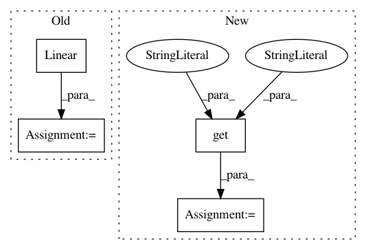

38c6a56381f2f93fd0fb819f81be26df86a6a0e1,python/baseline/pytorch/seq2seq/model.py,Seq2SeqAttnModel,__init__,#Seq2SeqAttnModel#Any#Any#,246
Before Change
self.probs = nn.LogSoftmax(dim=1)
self.output_to_attn = nn.Linear(self.hsz, self.hsz, bias=False)
self.attn_softmax = nn.Softmax(dim=1)
self.attn_out = nn.Linear(2 * self.hsz, self.hsz, bias=False)
self.attn_tanh = pytorch_activation("tanh")
self.nlayers = nlayers
def attn(self, output_t, context, src_mask=None):
After Change
self.preds = nn.Linear(self.hsz, self.nc)
self.probs = nn.LogSoftmax(dim=1)
self.nlayers = nlayers
attn_type = kwargs.get("attn_type", "luong").lower()
if attn_type == "dot":
self.attn_module = LuongDotProductAttention(enc_hsz)
else:
self.attn_module = LuongGeneralAttention(enc_hsz)
In pattern: SUPERPATTERN
Frequency: 3
Non-data size: 4
Instances
Project Name: dpressel/mead-baseline
Commit Name: 38c6a56381f2f93fd0fb819f81be26df86a6a0e1
Time: 2018-08-13
Author: dpressel@gmail.com
File Name: python/baseline/pytorch/seq2seq/model.py
Class Name: Seq2SeqAttnModel
Method Name: __init__
Project Name: deepinsight/insightface
Commit Name: dbf0fd7334d5866a8f575f3e024948d859db858f
Time: 2018-08-03
Author: guojia@gmail.com
File Name: src/symbols/fmobilefacenet.py
Class Name:
Method Name: get_symbol
Project Name: deepinsight/insightface
Commit Name: 57c14e7f131a851c7e94afd19dbc6f15ea1a0317
Time: 2018-08-03
Author: guojia@gmail.com
File Name: src/symbols/fmobilefacenet.py
Class Name:
Method Name: get_symbol